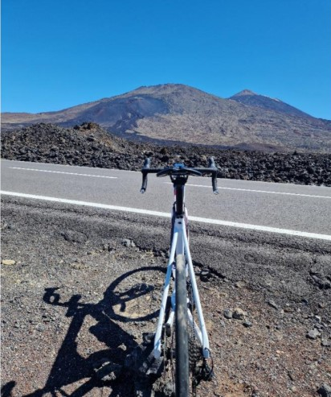
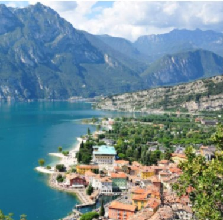

Training Camp
I CAMP sono momenti di aggregazione, divertimento e apprendimento. A disposizione degli atleti una varia scelta, sia in termini di location costi durata e distanza.

TENERIFE (ISOLE CANARIE)
Il CAMP per eccellenza nei mesi invernali. Paesaggi vulcanici da esplorare in bici, Tenerife rappresenta il meglio soprattutto per la parte ciclismo con salite e discese infinite e paesaggi mozzafiato.
Disponibilità di noleggio bici, accesso alla pista di atletica e alla piscina olimpionica rappresentano l’ideale per completare un CAMP di assoluto livello.
Ambiente informale adatta ad allo sportivo, permette un mix perfetto tra divertimento e sport della durata di 5/7 giorni.

TORBOLE SUL GARDA
Luogo comodo e utile per tutte le discipline che sia triathlon, ciclismo, podismo o nuoto. Nella zona nord del lago di Garda saremo ospiti dell’hotel Aktivhotel che presenta servizi al top come la piscina esterna da 25m riscaldata per nuotare da febbraio a novembre circondati dal verde, palestra interna alla struttura, percorsi di corsa, giri bike suggeriti appositamente in base alle nostre richieste oltre ad una zona lavaggio bici disponibile.
3/4 giorni immersi in questo luogo per assaporare l’idea di un CAMP.
I CAMP SARANNO ATTIVATI AL RAGGIUNGIMENTO DI UN NUMERO MINIMO DI ATLETI E AVRANNO POSTI LIMITATI PER GARANTIRE UN SERVIZIO DI QUALITA’. CONTATTAMI PER DISPONIBILITA’ PERIODO E COSTI.